원문에 기록된 작업 내용과 당시 검증 범위를 정리한 보관 기록입니다.
과거 단계 검토: CRLF 등 수정했으나 Smart Select 통제 검사 실패가 남음.
보관 기록 · 결과와 검증 범위는 원문 작성 시점을 기준으로 읽어주세요.
CodeAssist 0.0.91 수정·재검증
0.0.91 수정·자동 재검증
전체 108개 기능 카탈로그와 추가 검사 포함 126개 시나리오 를 자동 실행·촬영했습니다. 수정 도중 발견한 CRLF 위치 문제는 별도 최종 빌드에서 고친 뒤 7개 시나리오로 확인했습니다. 전체 배치와 최종 확인의 DLL SHA256을 각각 남겼으며, 최종 빌드로 전체 배치를 재실행한 것처럼 합치지 않았습니다.
최종 실제 편집 확인
정렬 창 수정 전후 — 실제 VS 촬영
0.0.90 다크 IDE에서 흰색 창
[참고 화면](../assets/imports/docs/validation/debug-0.0.91/sort-before.png)
0.0.91 전체 배치의 테마·그룹·버튼 수정 후
[참고 화면](../assets/imports/docs/validation/debug-0.0.91/CA-feature-053-dialog.png)
타입 교정·선택 재검사
설정 켠 타입 대소문자 교정 실제 결과
[참고 화면](../assets/imports/docs/validation/debug-0.0.91/final-CA-controlled-repair-case-after.png)
공백 제외 설정 켠 선택 결과
[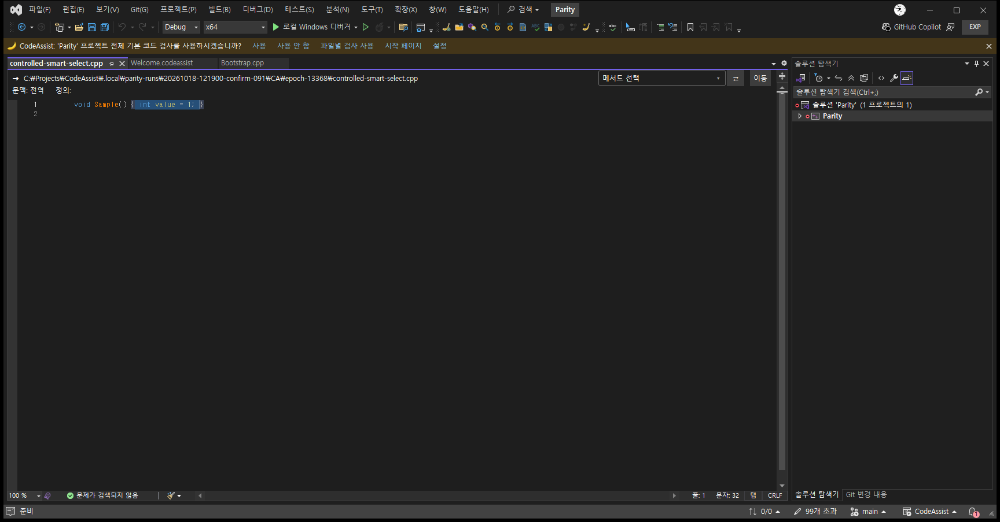
참고 화면](../assets/imports/docs/validation/debug-0.0.91/final-CA-controlled-smart-select-after.png)
최종 feature-053 재검사는 문서 포커스 보호 장치가 중단했습니다. 해당 항목을 통과 처리하지 않았으며 정렬 창 UI는 전체 배치에서 촬영한 화면으로 확인했습니다.
남은 작업
Surround default whitespace/selection still differs
Smart Select still differs even with whitespace trimming enabled
Unimplemented option groups remain
Address/PDB output-stage comparison remains
42/66 UI classifications lack scored corresponding screens
Physical shortcut execution 0/22
전체 작업을 완수했다고 보고하지 않습니다. 이번에 고친 항목과 통과 근거를 제시하며, 옵션 누락과 미검증 화면은 계속 남아 있습니다.
전체 배치 촬영 갤러리
아래는 전체 배치의 화면입니다. Scope 좌표 최종 수정 전 빌드이며, 같은 버전 번호라도 별도 해시로 구분했습니다. 미촬영은 빈칸을 통과 처리하지 않고 표시합니다.
feature-001
전체 배치 before
[참고 화면](../assets/imports/docs/validation/debug-0.0.91/CA-feature-001-before.png)
전체 배치 dialog
[참고 화면](../assets/imports/docs/validation/debug-0.0.91/CA-feature-001-dialog.png)
전체 배치 after
[참고 화면](../assets/imports/docs/validation/debug-0.0.91/CA-feature-001-after.png)
feature-002
전체 배치 before
[참고 화면](../assets/imports/docs/validation/debug-0.0.91/CA-feature-002-before.png)
전체 배치 dialog
[참고 화면](../assets/imports/docs/validation/debug-0.0.91/CA-feature-002-dialog.png)
전체 배치 after
[참고 화면](../assets/imports/docs/validation/debug-0.0.91/CA-feature-002-after.png)
feature-003
전체 배치 before
[참고 화면](../assets/imports/docs/validation/debug-0.0.91/CA-feature-003-before.png)
전체 배치 dialog
[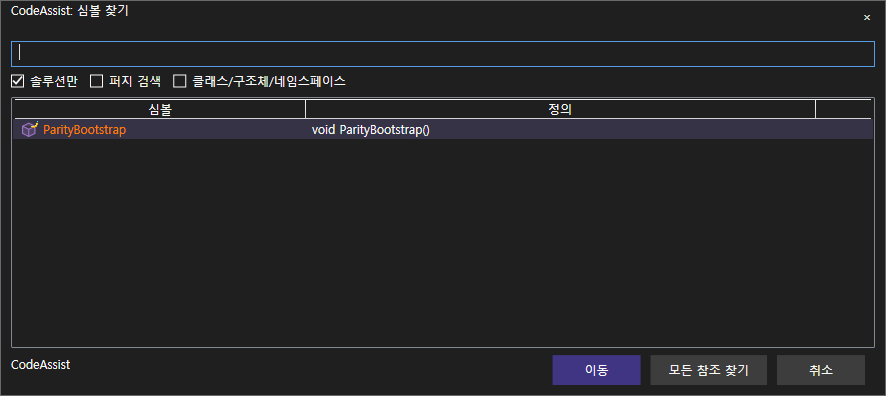
참고 화면](../assets/imports/docs/validation/debug-0.0.91/CA-feature-003-dialog.png)
전체 배치 after
[참고 화면](../assets/imports/docs/validation/debug-0.0.91/CA-feature-003-after.png)
feature-004
전체 배치 before
[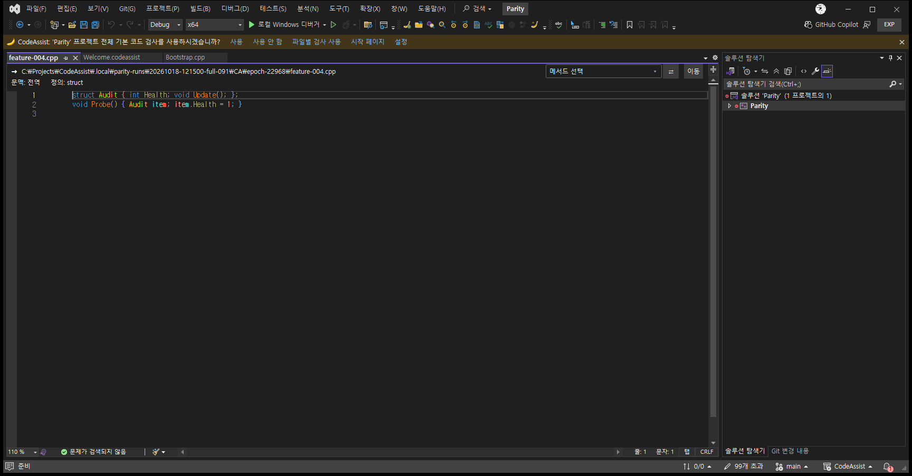
참고 화면](../assets/imports/docs/validation/debug-0.0.91/CA-feature-004-before.png)
전체 배치 dialog
[참고 화면](../assets/imports/docs/validation/debug-0.0.91/CA-feature-004-dialog.png)
전체 배치 after
[참고 화면](../assets/imports/docs/validation/debug-0.0.91/CA-feature-004-after.png)
feature-005
전체 배치 before
[참고 화면](../assets/imports/docs/validation/debug-0.0.91/CA-feature-005-before.png)
전체 배치 dialog
[참고 화면](../assets/imports/docs/validation/debug-0.0.91/CA-feature-005-dialog.png)
전체 배치 after
[참고 화면](../assets/imports/docs/validation/debug-0.0.91/CA-feature-005-after.png)
feature-006
전체 배치 before
[참고 화면](../assets/imports/docs/validation/debug-0.0.91/CA-feature-006-before.png)
전체 배치 dialog
[참고 화면](../assets/imports/docs/validation/debug-0.0.91/CA-feature-006-dialog.png)
전체 배치 after
[참고 화면](../assets/imports/docs/validation/debug-0.0.91/CA-feature-006-after.png)
feature-007
전체 배치 before
[참고 화면](../assets/imports/docs/validation/debug-0.0.91/CA-feature-007-before.png)
전체 배치 dialog
[참고 화면](../assets/imports/docs/validation/debug-0.0.91/CA-feature-007-dialog.png)
전체 배치 after
[참고 화면](../assets/imports/docs/validation/debug-0.0.91/CA-feature-007-after.png)
feature-008
전체 배치 before
[참고 화면](../assets/imports/docs/validation/debug-0.0.91/CA-feature-008-before.png)
전체 배치 dialog
[참고 화면](../assets/imports/docs/validation/debug-0.0.91/CA-feature-008-dialog.png)
전체 배치 after
[참고 화면](../assets/imports/docs/validation/debug-0.0.91/CA-feature-008-after.png)
scope-next
전체 배치 before
[참고 화면](../assets/imports/docs/validation/debug-0.0.91/CA-scope-next-before.png)
전체 배치 after
[참고 화면](../assets/imports/docs/validation/debug-0.0.91/CA-scope-next-after.png)
feature-010
전체 배치 before
[참고 화면](../assets/imports/docs/validation/debug-0.0.91/CA-feature-010-before.png)
전체 배치 dialog
[참고 화면](../assets/imports/docs/validation/debug-0.0.91/CA-feature-010-dialog.png)
전체 배치 after
[참고 화면](../assets/imports/docs/validation/debug-0.0.91/CA-feature-010-after.png)
feature-011
전체 배치 before
[참고 화면](../assets/imports/docs/validation/debug-0.0.91/CA-feature-011-before.png)
전체 배치 dialog
[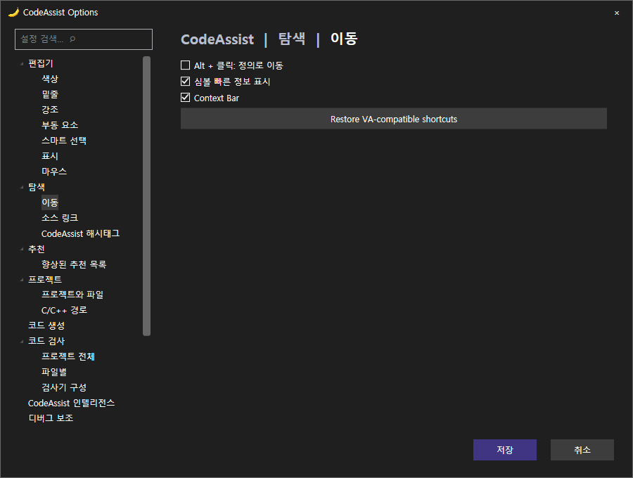
참고 화면](../assets/imports/docs/validation/debug-0.0.91/CA-feature-011-dialog.png)
전체 배치 after
[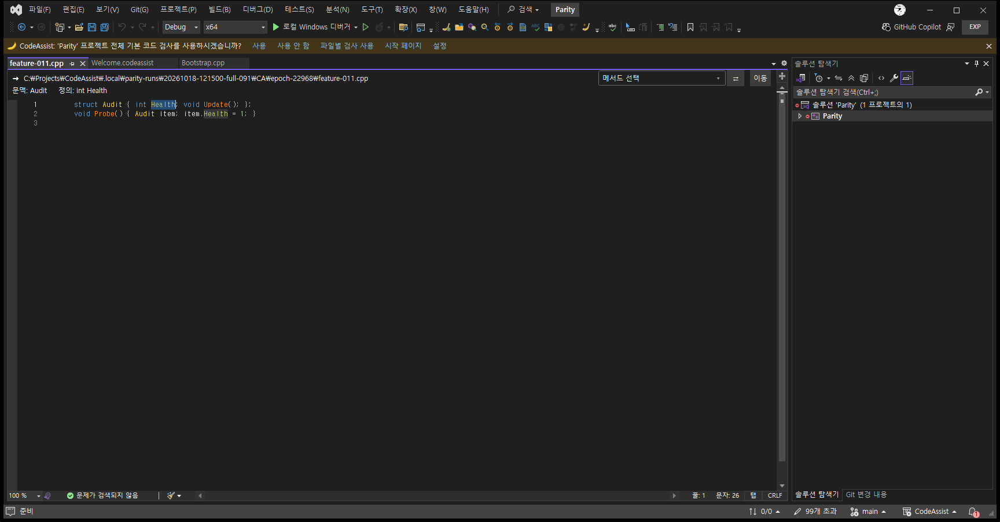
참고 화면](../assets/imports/docs/validation/debug-0.0.91/CA-feature-011-after.png)
feature-012
전체 배치 before
[참고 화면](../assets/imports/docs/validation/debug-0.0.91/CA-feature-012-before.png)
전체 배치 dialog
[참고 화면](../assets/imports/docs/validation/debug-0.0.91/CA-feature-012-dialog.png)
전체 배치 after
[참고 화면](../assets/imports/docs/validation/debug-0.0.91/CA-feature-012-after.png)
feature-013
전체 배치 before
[참고 화면](../assets/imports/docs/validation/debug-0.0.91/CA-feature-013-before.png)
전체 배치 dialog
[참고 화면](../assets/imports/docs/validation/debug-0.0.91/CA-feature-013-dialog.png)
전체 배치 after
[참고 화면](../assets/imports/docs/validation/debug-0.0.91/CA-feature-013-after.png)
feature-014
전체 배치 before
[참고 화면](../assets/imports/docs/validation/debug-0.0.91/CA-feature-014-before.png)
전체 배치 dialog
[참고 화면](../assets/imports/docs/validation/debug-0.0.91/CA-feature-014-dialog.png)
전체 배치 after
[참고 화면](../assets/imports/docs/validation/debug-0.0.91/CA-feature-014-after.png)
feature-015
전체 배치 before
[참고 화면](../assets/imports/docs/validation/debug-0.0.91/CA-feature-015-before.png)
전체 배치 dialog
[참고 화면](../assets/imports/docs/validation/debug-0.0.91/CA-feature-015-dialog.png)
전체 배치 after
[참고 화면](../assets/imports/docs/validation/debug-0.0.91/CA-feature-015-after.png)
feature-016
전체 배치 before
[참고 화면](../assets/imports/docs/validation/debug-0.0.91/CA-feature-016-before.png)
전체 배치 dialog
[참고 화면](../assets/imports/docs/validation/debug-0.0.91/CA-feature-016-dialog.png)
전체 배치 after
[참고 화면](../assets/imports/docs/validation/debug-0.0.91/CA-feature-016-after.png)
feature-017
전체 배치 before
[참고 화면](../assets/imports/docs/validation/debug-0.0.91/CA-feature-017-before.png)
전체 배치 dialog
[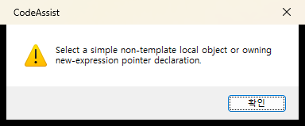
참고 화면](../assets/imports/docs/validation/debug-0.0.91/CA-feature-017-dialog.png)
전체 배치 after
[참고 화면](../assets/imports/docs/validation/debug-0.0.91/CA-feature-017-after.png)
feature-018
전체 배치 before
[참고 화면](../assets/imports/docs/validation/debug-0.0.91/CA-feature-018-before.png)
전체 배치 dialog
[참고 화면](../assets/imports/docs/validation/debug-0.0.91/CA-feature-018-dialog.png)
전체 배치 after
[참고 화면](../assets/imports/docs/validation/debug-0.0.91/CA-feature-018-after.png)
feature-019
전체 배치 before
[참고 화면](../assets/imports/docs/validation/debug-0.0.91/CA-feature-019-before.png)
전체 배치 dialog
[참고 화면](../assets/imports/docs/validation/debug-0.0.91/CA-feature-019-dialog.png)
전체 배치 after
[참고 화면](../assets/imports/docs/validation/debug-0.0.91/CA-feature-019-after.png)
feature-020
전체 배치 before
[참고 화면](../assets/imports/docs/validation/debug-0.0.91/CA-feature-020-before.png)
전체 배치 after
[참고 화면](../assets/imports/docs/validation/debug-0.0.91/CA-feature-020-after.png)
feature-021
전체 배치 before
[참고 화면](../assets/imports/docs/validation/debug-0.0.91/CA-feature-021-before.png)
전체 배치 after
[참고 화면](../assets/imports/docs/validation/debug-0.0.91/CA-feature-021-after.png)
feature-022
전체 배치 before
[참고 화면](../assets/imports/docs/validation/debug-0.0.91/CA-feature-022-before.png)
전체 배치 after
[참고 화면](../assets/imports/docs/validation/debug-0.0.91/CA-feature-022-after.png)
feature-023
전체 배치 before
[참고 화면](../assets/imports/docs/validation/debug-0.0.91/CA-feature-023-before.png)
전체 배치 dialog
[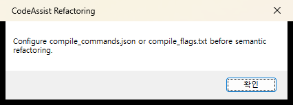
참고 화면](../assets/imports/docs/validation/debug-0.0.91/CA-feature-023-dialog.png)
전체 배치 after
[참고 화면](../assets/imports/docs/validation/debug-0.0.91/CA-feature-023-after.png)
feature-024
전체 배치 before
[참고 화면](../assets/imports/docs/validation/debug-0.0.91/CA-feature-024-before.png)
전체 배치 dialog
[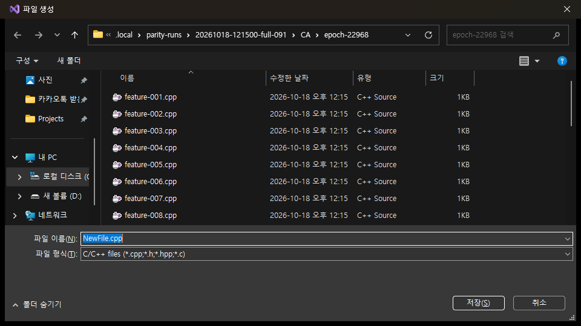
참고 화면](../assets/imports/docs/validation/debug-0.0.91/CA-feature-024-dialog.png)
전체 배치 after
[참고 화면](../assets/imports/docs/validation/debug-0.0.91/CA-feature-024-after.png)
feature-025
전체 배치 before
[참고 화면](../assets/imports/docs/validation/debug-0.0.91/CA-feature-025-before.png)
전체 배치 dialog
[참고 화면](../assets/imports/docs/validation/debug-0.0.91/CA-feature-025-dialog.png)
전체 배치 after
[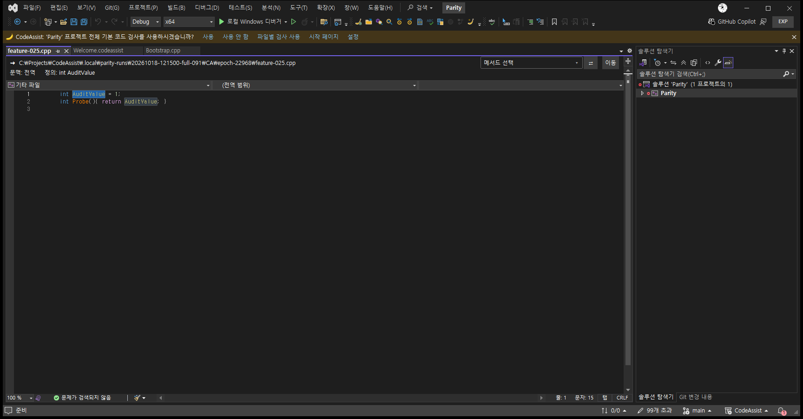
참고 화면](../assets/imports/docs/validation/debug-0.0.91/CA-feature-025-after.png)
feature-026
전체 배치 before
[참고 화면](../assets/imports/docs/validation/debug-0.0.91/CA-feature-026-before.png)
전체 배치 dialog
[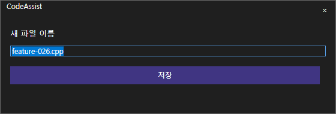
참고 화면](../assets/imports/docs/validation/debug-0.0.91/CA-feature-026-dialog.png)
전체 배치 after
[참고 화면](../assets/imports/docs/validation/debug-0.0.91/CA-feature-026-after.png)
feature-027
전체 배치 before
[참고 화면](../assets/imports/docs/validation/debug-0.0.91/CA-feature-027-before.png)
전체 배치 dialog
[참고 화면](../assets/imports/docs/validation/debug-0.0.91/CA-feature-027-dialog.png)
전체 배치 after
[참고 화면](../assets/imports/docs/validation/debug-0.0.91/CA-feature-027-after.png)
feature-028
전체 배치 before
[참고 화면](../assets/imports/docs/validation/debug-0.0.91/CA-feature-028-before.png)
전체 배치 dialog
[참고 화면](../assets/imports/docs/validation/debug-0.0.91/CA-feature-028-dialog.png)
전체 배치 after
[참고 화면](../assets/imports/docs/validation/debug-0.0.91/CA-feature-028-after.png)
feature-029
전체 배치 before
[참고 화면](../assets/imports/docs/validation/debug-0.0.91/CA-feature-029-before.png)
전체 배치 dialog
[참고 화면](../assets/imports/docs/validation/debug-0.0.91/CA-feature-029-dialog.png)
전체 배치 after
[참고 화면](../assets/imports/docs/validation/debug-0.0.91/CA-feature-029-after.png)
feature-030
전체 배치 before
[참고 화면](../assets/imports/docs/validation/debug-0.0.91/CA-feature-030-before.png)
전체 배치 dialog
[참고 화면](../assets/imports/docs/validation/debug-0.0.91/CA-feature-030-dialog.png)
전체 배치 after
[참고 화면](../assets/imports/docs/validation/debug-0.0.91/CA-feature-030-after.png)
feature-031
전체 배치 before
[참고 화면](../assets/imports/docs/validation/debug-0.0.91/CA-feature-031-before.png)
전체 배치 dialog
[참고 화면](../assets/imports/docs/validation/debug-0.0.91/CA-feature-031-dialog.png)
전체 배치 after
[참고 화면](../assets/imports/docs/validation/debug-0.0.91/CA-feature-031-after.png)
feature-032
전체 배치 before
[참고 화면](../assets/imports/docs/validation/debug-0.0.91/CA-feature-032-before.png)
전체 배치 dialog
[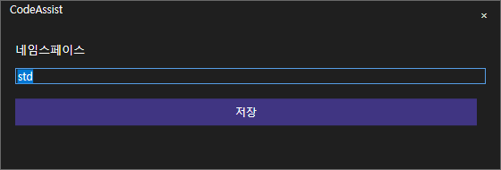
참고 화면](../assets/imports/docs/validation/debug-0.0.91/CA-feature-032-dialog.png)
전체 배치 after
[참고 화면](../assets/imports/docs/validation/debug-0.0.91/CA-feature-032-after.png)
feature-033
전체 배치 before
[참고 화면](../assets/imports/docs/validation/debug-0.0.91/CA-feature-033-before.png)
전체 배치 dialog
[참고 화면](../assets/imports/docs/validation/debug-0.0.91/CA-feature-033-dialog.png)
전체 배치 after
[참고 화면](../assets/imports/docs/validation/debug-0.0.91/CA-feature-033-after.png)
feature-034
전체 배치 before
[참고 화면](../assets/imports/docs/validation/debug-0.0.91/CA-feature-034-before.png)
전체 배치 dialog
[참고 화면](../assets/imports/docs/validation/debug-0.0.91/CA-feature-034-dialog.png)
전체 배치 after
[참고 화면](../assets/imports/docs/validation/debug-0.0.91/CA-feature-034-after.png)
feature-035
전체 배치 before
[참고 화면](../assets/imports/docs/validation/debug-0.0.91/CA-feature-035-before.png)
전체 배치 dialog
[참고 화면](../assets/imports/docs/validation/debug-0.0.91/CA-feature-035-dialog.png)
전체 배치 after
[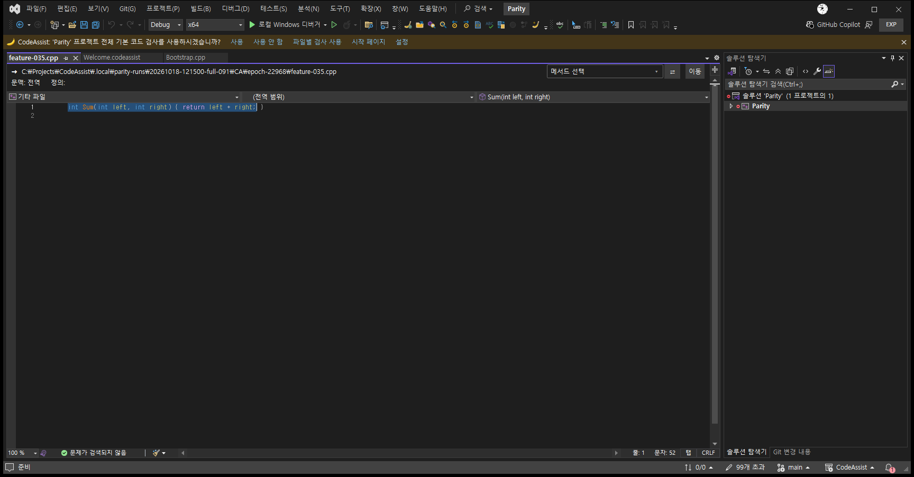
참고 화면](../assets/imports/docs/validation/debug-0.0.91/CA-feature-035-after.png)
feature-036
전체 배치 before
[참고 화면](../assets/imports/docs/validation/debug-0.0.91/CA-feature-036-before.png)
전체 배치 dialog
[참고 화면](../assets/imports/docs/validation/debug-0.0.91/CA-feature-036-dialog.png)
전체 배치 after
[참고 화면](../assets/imports/docs/validation/debug-0.0.91/CA-feature-036-after.png)
feature-037
전체 배치 before
[참고 화면](../assets/imports/docs/validation/debug-0.0.91/CA-feature-037-before.png)
전체 배치 after
[참고 화면](../assets/imports/docs/validation/debug-0.0.91/CA-feature-037-after.png)
feature-038
전체 배치 before
[참고 화면](../assets/imports/docs/validation/debug-0.0.91/CA-feature-038-before.png)
전체 배치 dialog
[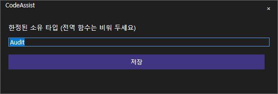
참고 화면](../assets/imports/docs/validation/debug-0.0.91/CA-feature-038-dialog.png)
전체 배치 after
[참고 화면](../assets/imports/docs/validation/debug-0.0.91/CA-feature-038-after.png)
feature-039
전체 배치 before
[참고 화면](../assets/imports/docs/validation/debug-0.0.91/CA-feature-039-before.png)
전체 배치 dialog
[참고 화면](../assets/imports/docs/validation/debug-0.0.91/CA-feature-039-dialog.png)
전체 배치 after
[참고 화면](../assets/imports/docs/validation/debug-0.0.91/CA-feature-039-after.png)
feature-040
전체 배치 before
[참고 화면](../assets/imports/docs/validation/debug-0.0.91/CA-feature-040-before.png)
전체 배치 after
[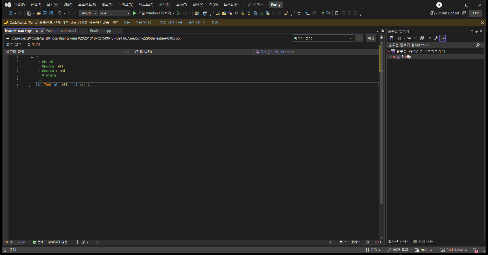
참고 화면](../assets/imports/docs/validation/debug-0.0.91/CA-feature-040-after.png)
feature-041
전체 배치 before
[참고 화면](../assets/imports/docs/validation/debug-0.0.91/CA-feature-041-before.png)
전체 배치 dialog
[참고 화면](../assets/imports/docs/validation/debug-0.0.91/CA-feature-041-dialog.png)
전체 배치 after
[참고 화면](../assets/imports/docs/validation/debug-0.0.91/CA-feature-041-after.png)
acronym
전체 배치 before
[참고 화면](../assets/imports/docs/validation/debug-0.0.91/CA-acronym-before.png)
전체 배치 after
[참고 화면](../assets/imports/docs/validation/debug-0.0.91/CA-acronym-after.png)
comment-continuation
전체 배치 before
[참고 화면](../assets/imports/docs/validation/debug-0.0.91/CA-comment-continuation-before.png)
전체 배치 after
[참고 화면](../assets/imports/docs/validation/debug-0.0.91/CA-comment-continuation-after.png)
completion
전체 배치 before
[참고 화면](../assets/imports/docs/validation/debug-0.0.91/CA-completion-before.png)
전체 배치 after
[참고 화면](../assets/imports/docs/validation/debug-0.0.91/CA-completion-after.png)
feature-045
전체 배치 before
[참고 화면](../assets/imports/docs/validation/debug-0.0.91/CA-feature-045-before.png)
전체 배치 dialog
[참고 화면](../assets/imports/docs/validation/debug-0.0.91/CA-feature-045-dialog.png)
전체 배치 after
[참고 화면](../assets/imports/docs/validation/debug-0.0.91/CA-feature-045-after.png)
pair-insert
전체 배치 before
[참고 화면](../assets/imports/docs/validation/debug-0.0.91/CA-pair-insert-before.png)
전체 배치 after
[참고 화면](../assets/imports/docs/validation/debug-0.0.91/CA-pair-insert-after.png)
feature-047
전체 배치 before
[참고 화면](../assets/imports/docs/validation/debug-0.0.91/CA-feature-047-before.png)
전체 배치 dialog
[참고 화면](../assets/imports/docs/validation/debug-0.0.91/CA-feature-047-dialog.png)
전체 배치 after
[참고 화면](../assets/imports/docs/validation/debug-0.0.91/CA-feature-047-after.png)
feature-048
전체 배치 before
[참고 화면](../assets/imports/docs/validation/debug-0.0.91/CA-feature-048-before.png)
전체 배치 dialog
[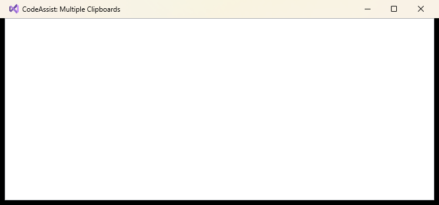
참고 화면](../assets/imports/docs/validation/debug-0.0.91/CA-feature-048-dialog.png)
전체 배치 after
[참고 화면](../assets/imports/docs/validation/debug-0.0.91/CA-feature-048-after.png)
reset-zoom
전체 배치 before
[참고 화면](../assets/imports/docs/validation/debug-0.0.91/CA-reset-zoom-before.png)
전체 배치 after
[참고 화면](../assets/imports/docs/validation/debug-0.0.91/CA-reset-zoom-after.png)
shorthand
전체 배치 before
[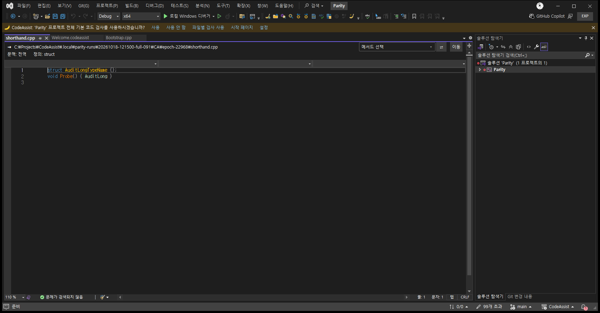
참고 화면](../assets/imports/docs/validation/debug-0.0.91/CA-shorthand-before.png)
전체 배치 after
[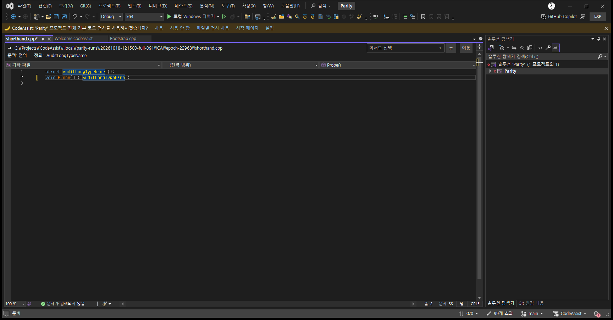
참고 화면](../assets/imports/docs/validation/debug-0.0.91/CA-shorthand-after.png)
smart-select
전체 배치 before
[참고 화면](../assets/imports/docs/validation/debug-0.0.91/CA-smart-select-before.png)
전체 배치 after
[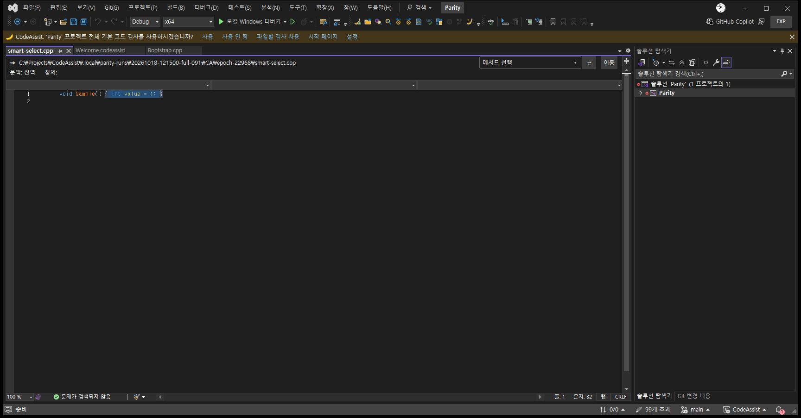
참고 화면](../assets/imports/docs/validation/debug-0.0.91/CA-smart-select-after.png)
feature-052
전체 배치 before
[참고 화면](../assets/imports/docs/validation/debug-0.0.91/CA-feature-052-before.png)
전체 배치 dialog
[참고 화면](../assets/imports/docs/validation/debug-0.0.91/CA-feature-052-dialog.png)
전체 배치 after
[참고 화면](../assets/imports/docs/validation/debug-0.0.91/CA-feature-052-after.png)
feature-053
전체 배치 before
[참고 화면](../assets/imports/docs/validation/debug-0.0.91/CA-feature-053-before.png)
전체 배치 dialog
[참고 화면](../assets/imports/docs/validation/debug-0.0.91/CA-feature-053-dialog.png)
전체 배치 after
[참고 화면](../assets/imports/docs/validation/debug-0.0.91/CA-feature-053-after.png)
feature-054
전체 배치 before
[참고 화면](../assets/imports/docs/validation/debug-0.0.91/CA-feature-054-before.png)
전체 배치 dialog
[참고 화면](../assets/imports/docs/validation/debug-0.0.91/CA-feature-054-dialog.png)
전체 배치 after
[참고 화면](../assets/imports/docs/validation/debug-0.0.91/CA-feature-054-after.png)
surround-word
전체 배치 before
[참고 화면](../assets/imports/docs/validation/debug-0.0.91/CA-surround-word-before.png)
전체 배치 after
[참고 화면](../assets/imports/docs/validation/debug-0.0.91/CA-surround-word-after.png)
feature-056
전체 배치 before
[참고 화면](../assets/imports/docs/validation/debug-0.0.91/CA-feature-056-before.png)
전체 배치 dialog
[참고 화면](../assets/imports/docs/validation/debug-0.0.91/CA-feature-056-dialog.png)
전체 배치 after
[참고 화면](../assets/imports/docs/validation/debug-0.0.91/CA-feature-056-after.png)
feature-057
전체 배치 before
[참고 화면](../assets/imports/docs/validation/debug-0.0.91/CA-feature-057-before.png)
전체 배치 dialog
[참고 화면](../assets/imports/docs/validation/debug-0.0.91/CA-feature-057-dialog.png)
전체 배치 after
[참고 화면](../assets/imports/docs/validation/debug-0.0.91/CA-feature-057-after.png)
feature-058
전체 배치 before
[참고 화면](../assets/imports/docs/validation/debug-0.0.91/CA-feature-058-before.png)
전체 배치 dialog
[참고 화면](../assets/imports/docs/validation/debug-0.0.91/CA-feature-058-dialog.png)
전체 배치 after
[참고 화면](../assets/imports/docs/validation/debug-0.0.91/CA-feature-058-after.png)
feature-059
전체 배치 before
[참고 화면](../assets/imports/docs/validation/debug-0.0.91/CA-feature-059-before.png)
전체 배치 dialog
[참고 화면](../assets/imports/docs/validation/debug-0.0.91/CA-feature-059-dialog.png)
전체 배치 after
[참고 화면](../assets/imports/docs/validation/debug-0.0.91/CA-feature-059-after.png)
feature-060
전체 배치 before
[참고 화면](../assets/imports/docs/validation/debug-0.0.91/CA-feature-060-before.png)
전체 배치 dialog
[참고 화면](../assets/imports/docs/validation/debug-0.0.91/CA-feature-060-dialog.png)
전체 배치 after
[참고 화면](../assets/imports/docs/validation/debug-0.0.91/CA-feature-060-after.png)
feature-061
전체 배치 before
[참고 화면](../assets/imports/docs/validation/debug-0.0.91/CA-feature-061-before.png)
전체 배치 dialog
[참고 화면](../assets/imports/docs/validation/debug-0.0.91/CA-feature-061-dialog.png)
전체 배치 after
[참고 화면](../assets/imports/docs/validation/debug-0.0.91/CA-feature-061-after.png)
feature-062
전체 배치 before
[참고 화면](../assets/imports/docs/validation/debug-0.0.91/CA-feature-062-before.png)
전체 배치 dialog
[참고 화면](../assets/imports/docs/validation/debug-0.0.91/CA-feature-062-dialog.png)
전체 배치 after
[참고 화면](../assets/imports/docs/validation/debug-0.0.91/CA-feature-062-after.png)
feature-063
전체 배치 before
[참고 화면](../assets/imports/docs/validation/debug-0.0.91/CA-feature-063-before.png)
전체 배치 dialog
[참고 화면](../assets/imports/docs/validation/debug-0.0.91/CA-feature-063-dialog.png)
전체 배치 after
[참고 화면](../assets/imports/docs/validation/debug-0.0.91/CA-feature-063-after.png)
feature-064
전체 배치 before
[참고 화면](../assets/imports/docs/validation/debug-0.0.91/CA-feature-064-before.png)
전체 배치 dialog
[참고 화면](../assets/imports/docs/validation/debug-0.0.91/CA-feature-064-dialog.png)
전체 배치 after
[참고 화면](../assets/imports/docs/validation/debug-0.0.91/CA-feature-064-after.png)
feature-065
전체 배치 before
[참고 화면](../assets/imports/docs/validation/debug-0.0.91/CA-feature-065-before.png)
전체 배치 dialog
[참고 화면](../assets/imports/docs/validation/debug-0.0.91/CA-feature-065-dialog.png)
전체 배치 after
[참고 화면](../assets/imports/docs/validation/debug-0.0.91/CA-feature-065-after.png)
feature-066
전체 배치 before
[참고 화면](../assets/imports/docs/validation/debug-0.0.91/CA-feature-066-before.png)
전체 배치 dialog
[참고 화면](../assets/imports/docs/validation/debug-0.0.91/CA-feature-066-dialog.png)
전체 배치 after
[참고 화면](../assets/imports/docs/validation/debug-0.0.91/CA-feature-066-after.png)
feature-067
전체 배치 before
[참고 화면](../assets/imports/docs/validation/debug-0.0.91/CA-feature-067-before.png)
전체 배치 dialog
[참고 화면](../assets/imports/docs/validation/debug-0.0.91/CA-feature-067-dialog.png)
전체 배치 after
[참고 화면](../assets/imports/docs/validation/debug-0.0.91/CA-feature-067-after.png)
feature-068
전체 배치 before
[참고 화면](../assets/imports/docs/validation/debug-0.0.91/CA-feature-068-before.png)
전체 배치 dialog
[참고 화면](../assets/imports/docs/validation/debug-0.0.91/CA-feature-068-dialog.png)
전체 배치 after
[참고 화면](../assets/imports/docs/validation/debug-0.0.91/CA-feature-068-after.png)
dot-to-arrow
전체 배치 before
[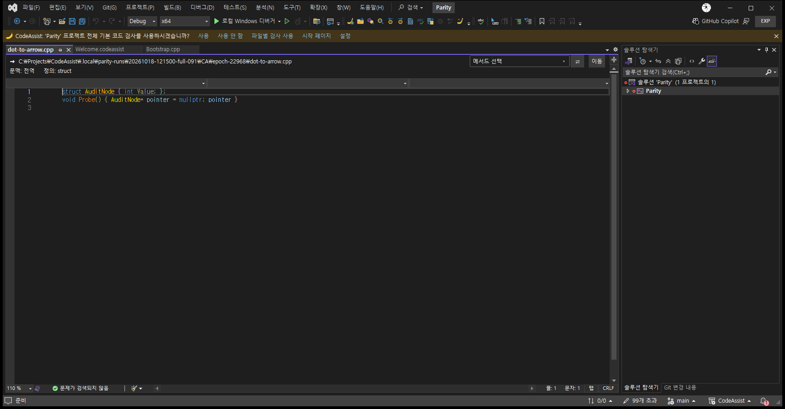
참고 화면](../assets/imports/docs/validation/debug-0.0.91/CA-dot-to-arrow-before.png)
전체 배치 after
[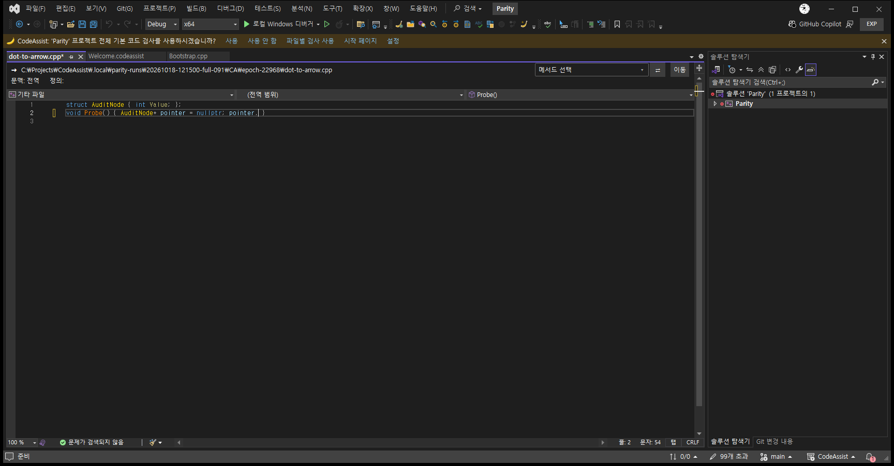
참고 화면](../assets/imports/docs/validation/debug-0.0.91/CA-dot-to-arrow-after.png)
feature-070
전체 배치 before
[참고 화면](../assets/imports/docs/validation/debug-0.0.91/CA-feature-070-before.png)
전체 배치 dialog
[참고 화면](../assets/imports/docs/validation/debug-0.0.91/CA-feature-070-dialog.png)
전체 배치 after
[참고 화면](../assets/imports/docs/validation/debug-0.0.91/CA-feature-070-after.png)
feature-071
전체 배치 before
[참고 화면](../assets/imports/docs/validation/debug-0.0.91/CA-feature-071-before.png)
전체 배치 dialog
[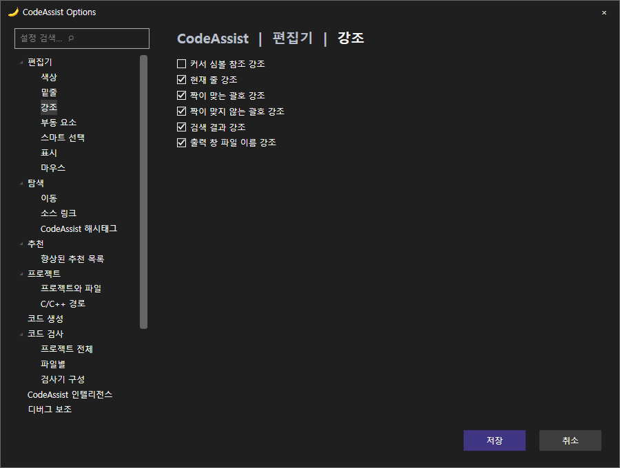
참고 화면](../assets/imports/docs/validation/debug-0.0.91/CA-feature-071-dialog.png)
전체 배치 after
[참고 화면](../assets/imports/docs/validation/debug-0.0.91/CA-feature-071-after.png)
feature-072
전체 배치 before
[참고 화면](../assets/imports/docs/validation/debug-0.0.91/CA-feature-072-before.png)
전체 배치 dialog
[참고 화면](../assets/imports/docs/validation/debug-0.0.91/CA-feature-072-dialog.png)
전체 배치 after
[참고 화면](../assets/imports/docs/validation/debug-0.0.91/CA-feature-072-after.png)
repair-case
전체 배치 before
[참고 화면](../assets/imports/docs/validation/debug-0.0.91/CA-repair-case-before.png)
전체 배치 after
[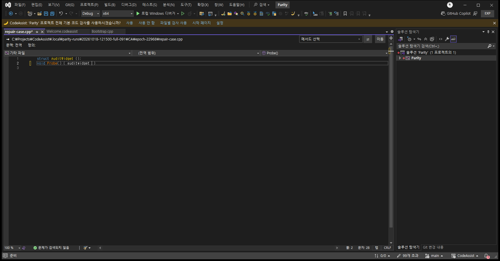
참고 화면](../assets/imports/docs/validation/debug-0.0.91/CA-repair-case-after.png)
feature-074
전체 배치 before
[참고 화면](../assets/imports/docs/validation/debug-0.0.91/CA-feature-074-before.png)
전체 배치 dialog
[참고 화면](../assets/imports/docs/validation/debug-0.0.91/CA-feature-074-dialog.png)
전체 배치 after
[참고 화면](../assets/imports/docs/validation/debug-0.0.91/CA-feature-074-after.png)
feature-075
전체 배치 before
[참고 화면](../assets/imports/docs/validation/debug-0.0.91/CA-feature-075-before.png)
전체 배치 dialog
[참고 화면](../assets/imports/docs/validation/debug-0.0.91/CA-feature-075-dialog.png)
전체 배치 after
[참고 화면](../assets/imports/docs/validation/debug-0.0.91/CA-feature-075-after.png)
feature-076
전체 배치 before
[참고 화면](../assets/imports/docs/validation/debug-0.0.91/CA-feature-076-before.png)
전체 배치 dialog
[참고 화면](../assets/imports/docs/validation/debug-0.0.91/CA-feature-076-dialog.png)
전체 배치 after
[참고 화면](../assets/imports/docs/validation/debug-0.0.91/CA-feature-076-after.png)
feature-077
전체 배치 before
[참고 화면](../assets/imports/docs/validation/debug-0.0.91/CA-feature-077-before.png)
전체 배치 dialog
[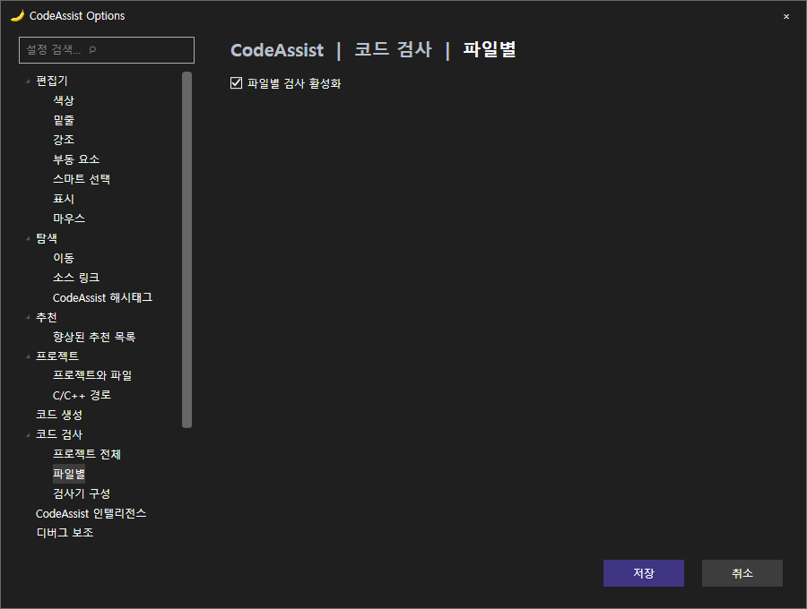
참고 화면](../assets/imports/docs/validation/debug-0.0.91/CA-feature-077-dialog.png)
전체 배치 after
[참고 화면](../assets/imports/docs/validation/debug-0.0.91/CA-feature-077-after.png)
feature-078
전체 배치 before
[참고 화면](../assets/imports/docs/validation/debug-0.0.91/CA-feature-078-before.png)
전체 배치 dialog
[참고 화면](../assets/imports/docs/validation/debug-0.0.91/CA-feature-078-dialog.png)
전체 배치 after
[참고 화면](../assets/imports/docs/validation/debug-0.0.91/CA-feature-078-after.png)
feature-079
전체 배치 before
[참고 화면](../assets/imports/docs/validation/debug-0.0.91/CA-feature-079-before.png)
전체 배치 dialog
[참고 화면](../assets/imports/docs/validation/debug-0.0.91/CA-feature-079-dialog.png)
전체 배치 after
[참고 화면](../assets/imports/docs/validation/debug-0.0.91/CA-feature-079-after.png)
feature-080
전체 배치 before
[참고 화면](../assets/imports/docs/validation/debug-0.0.91/CA-feature-080-before.png)
전체 배치 dialog
[참고 화면](../assets/imports/docs/validation/debug-0.0.91/CA-feature-080-dialog.png)
전체 배치 after
[참고 화면](../assets/imports/docs/validation/debug-0.0.91/CA-feature-080-after.png)
feature-081
전체 배치 before
[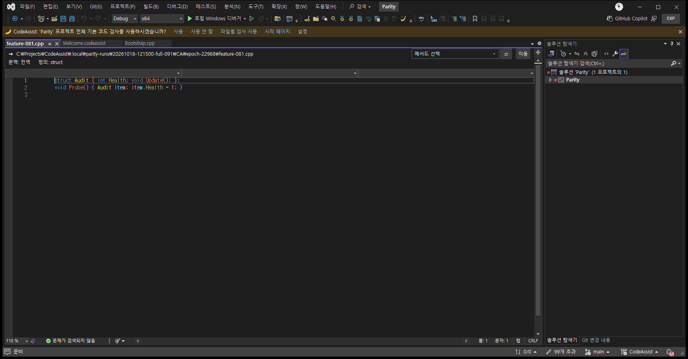
참고 화면](../assets/imports/docs/validation/debug-0.0.91/CA-feature-081-before.png)
전체 배치 dialog
[참고 화면](../assets/imports/docs/validation/debug-0.0.91/CA-feature-081-dialog.png)
전체 배치 after
[참고 화면](../assets/imports/docs/validation/debug-0.0.91/CA-feature-081-after.png)
feature-082
전체 배치 before
[참고 화면](../assets/imports/docs/validation/debug-0.0.91/CA-feature-082-before.png)
전체 배치 dialog
[참고 화면](../assets/imports/docs/validation/debug-0.0.91/CA-feature-082-dialog.png)
전체 배치 after
[참고 화면](../assets/imports/docs/validation/debug-0.0.91/CA-feature-082-after.png)
feature-083
전체 배치 before
[참고 화면](../assets/imports/docs/validation/debug-0.0.91/CA-feature-083-before.png)
전체 배치 dialog
[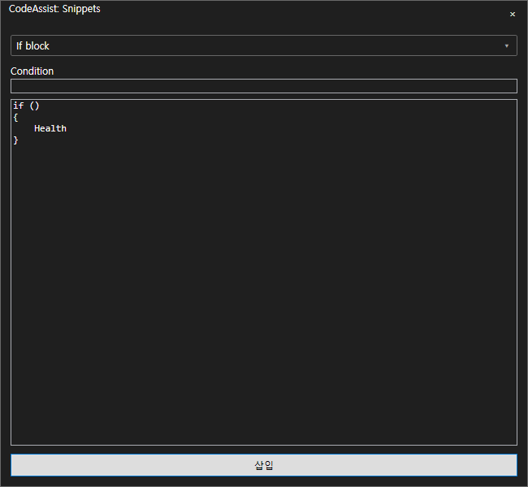
참고 화면](../assets/imports/docs/validation/debug-0.0.91/CA-feature-083-dialog.png)
전체 배치 after
[참고 화면](../assets/imports/docs/validation/debug-0.0.91/CA-feature-083-after.png)
feature-084
전체 배치 before
[참고 화면](../assets/imports/docs/validation/debug-0.0.91/CA-feature-084-before.png)
전체 배치 dialog
[참고 화면](../assets/imports/docs/validation/debug-0.0.91/CA-feature-084-dialog.png)
전체 배치 after
[참고 화면](../assets/imports/docs/validation/debug-0.0.91/CA-feature-084-after.png)
feature-085
전체 배치 before
[참고 화면](../assets/imports/docs/validation/debug-0.0.91/CA-feature-085-before.png)
전체 배치 dialog
[참고 화면](../assets/imports/docs/validation/debug-0.0.91/CA-feature-085-dialog.png)
전체 배치 after
[참고 화면](../assets/imports/docs/validation/debug-0.0.91/CA-feature-085-after.png)
feature-086
전체 배치 before
[참고 화면](../assets/imports/docs/validation/debug-0.0.91/CA-feature-086-before.png)
전체 배치 dialog
[참고 화면](../assets/imports/docs/validation/debug-0.0.91/CA-feature-086-dialog.png)
전체 배치 after
[참고 화면](../assets/imports/docs/validation/debug-0.0.91/CA-feature-086-after.png)
feature-087
전체 배치 before
[참고 화면](../assets/imports/docs/validation/debug-0.0.91/CA-feature-087-before.png)
전체 배치 dialog
[참고 화면](../assets/imports/docs/validation/debug-0.0.91/CA-feature-087-dialog.png)
전체 배치 after
[참고 화면](../assets/imports/docs/validation/debug-0.0.91/CA-feature-087-after.png)
feature-088
전체 배치 before
[참고 화면](../assets/imports/docs/validation/debug-0.0.91/CA-feature-088-before.png)
전체 배치 dialog
[참고 화면](../assets/imports/docs/validation/debug-0.0.91/CA-feature-088-dialog.png)
전체 배치 after
[참고 화면](../assets/imports/docs/validation/debug-0.0.91/CA-feature-088-after.png)
feature-089
전체 배치 before
[참고 화면](../assets/imports/docs/validation/debug-0.0.91/CA-feature-089-before.png)
전체 배치 dialog
[참고 화면](../assets/imports/docs/validation/debug-0.0.91/CA-feature-089-dialog.png)
전체 배치 after
[참고 화면](../assets/imports/docs/validation/debug-0.0.91/CA-feature-089-after.png)
feature-090
전체 배치 before
[참고 화면](../assets/imports/docs/validation/debug-0.0.91/CA-feature-090-before.png)
전체 배치 dialog
[참고 화면](../assets/imports/docs/validation/debug-0.0.91/CA-feature-090-dialog.png)
전체 배치 after
[참고 화면](../assets/imports/docs/validation/debug-0.0.91/CA-feature-090-after.png)
feature-091
전체 배치 before
[참고 화면](../assets/imports/docs/validation/debug-0.0.91/CA-feature-091-before.png)
전체 배치 dialog
[참고 화면](../assets/imports/docs/validation/debug-0.0.91/CA-feature-091-dialog.png)
전체 배치 after
[참고 화면](../assets/imports/docs/validation/debug-0.0.91/CA-feature-091-after.png)
feature-092
전체 배치 before
[참고 화면](../assets/imports/docs/validation/debug-0.0.91/CA-feature-092-before.png)
전체 배치 dialog
[참고 화면](../assets/imports/docs/validation/debug-0.0.91/CA-feature-092-dialog.png)
전체 배치 after
[참고 화면](../assets/imports/docs/validation/debug-0.0.91/CA-feature-092-after.png)
feature-093
전체 배치 before
[참고 화면](../assets/imports/docs/validation/debug-0.0.91/CA-feature-093-before.png)
전체 배치 dialog
[참고 화면](../assets/imports/docs/validation/debug-0.0.91/CA-feature-093-dialog.png)
전체 배치 after
[참고 화면](../assets/imports/docs/validation/debug-0.0.91/CA-feature-093-after.png)
feature-094
전체 배치 before
[참고 화면](../assets/imports/docs/validation/debug-0.0.91/CA-feature-094-before.png)
전체 배치 dialog
[참고 화면](../assets/imports/docs/validation/debug-0.0.91/CA-feature-094-dialog.png)
전체 배치 after
[참고 화면](../assets/imports/docs/validation/debug-0.0.91/CA-feature-094-after.png)
feature-095
전체 배치 before
[참고 화면](../assets/imports/docs/validation/debug-0.0.91/CA-feature-095-before.png)
전체 배치 dialog
[참고 화면](../assets/imports/docs/validation/debug-0.0.91/CA-feature-095-dialog.png)
전체 배치 after
[참고 화면](../assets/imports/docs/validation/debug-0.0.91/CA-feature-095-after.png)
feature-096
전체 배치 before
[참고 화면](../assets/imports/docs/validation/debug-0.0.91/CA-feature-096-before.png)
전체 배치 dialog
[참고 화면](../assets/imports/docs/validation/debug-0.0.91/CA-feature-096-dialog.png)
전체 배치 after
[참고 화면](../assets/imports/docs/validation/debug-0.0.91/CA-feature-096-after.png)
feature-097
전체 배치 before
[참고 화면](../assets/imports/docs/validation/debug-0.0.91/CA-feature-097-before.png)
전체 배치 dialog
[참고 화면](../assets/imports/docs/validation/debug-0.0.91/CA-feature-097-dialog.png)
전체 배치 after
[참고 화면](../assets/imports/docs/validation/debug-0.0.91/CA-feature-097-after.png)
feature-098
전체 배치 before
[참고 화면](../assets/imports/docs/validation/debug-0.0.91/CA-feature-098-before.png)
전체 배치 dialog
[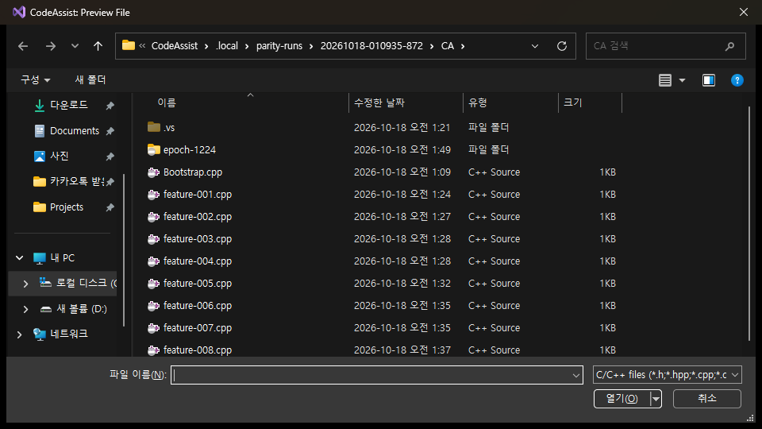
참고 화면](../assets/imports/docs/validation/debug-0.0.91/CA-feature-098-dialog.png)
전체 배치 after
[참고 화면](../assets/imports/docs/validation/debug-0.0.91/CA-feature-098-after.png)
feature-099
전체 배치 before
[참고 화면](../assets/imports/docs/validation/debug-0.0.91/CA-feature-099-before.png)
전체 배치 dialog
[참고 화면](../assets/imports/docs/validation/debug-0.0.91/CA-feature-099-dialog.png)
전체 배치 after
[참고 화면](../assets/imports/docs/validation/debug-0.0.91/CA-feature-099-after.png)
feature-100
전체 배치 before
[참고 화면](../assets/imports/docs/validation/debug-0.0.91/CA-feature-100-before.png)
전체 배치 dialog
[참고 화면](../assets/imports/docs/validation/debug-0.0.91/CA-feature-100-dialog.png)
전체 배치 after
[참고 화면](../assets/imports/docs/validation/debug-0.0.91/CA-feature-100-after.png)
feature-101
전체 배치 before
[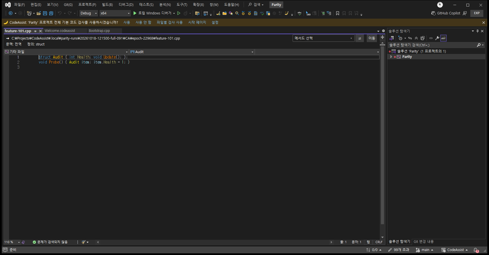
참고 화면](../assets/imports/docs/validation/debug-0.0.91/CA-feature-101-before.png)
전체 배치 dialog
[참고 화면](../assets/imports/docs/validation/debug-0.0.91/CA-feature-101-dialog.png)
전체 배치 after
[참고 화면](../assets/imports/docs/validation/debug-0.0.91/CA-feature-101-after.png)
feature-102
전체 배치 before
[참고 화면](../assets/imports/docs/validation/debug-0.0.91/CA-feature-102-before.png)
전체 배치 dialog
[참고 화면](../assets/imports/docs/validation/debug-0.0.91/CA-feature-102-dialog.png)
전체 배치 after
[참고 화면](../assets/imports/docs/validation/debug-0.0.91/CA-feature-102-after.png)
feature-103
전체 배치 before
[참고 화면](../assets/imports/docs/validation/debug-0.0.91/CA-feature-103-before.png)
전체 배치 dialog
[참고 화면](../assets/imports/docs/validation/debug-0.0.91/CA-feature-103-dialog.png)
전체 배치 after
[참고 화면](../assets/imports/docs/validation/debug-0.0.91/CA-feature-103-after.png)
feature-104
전체 배치 before
[참고 화면](../assets/imports/docs/validation/debug-0.0.91/CA-feature-104-before.png)
전체 배치 dialog
[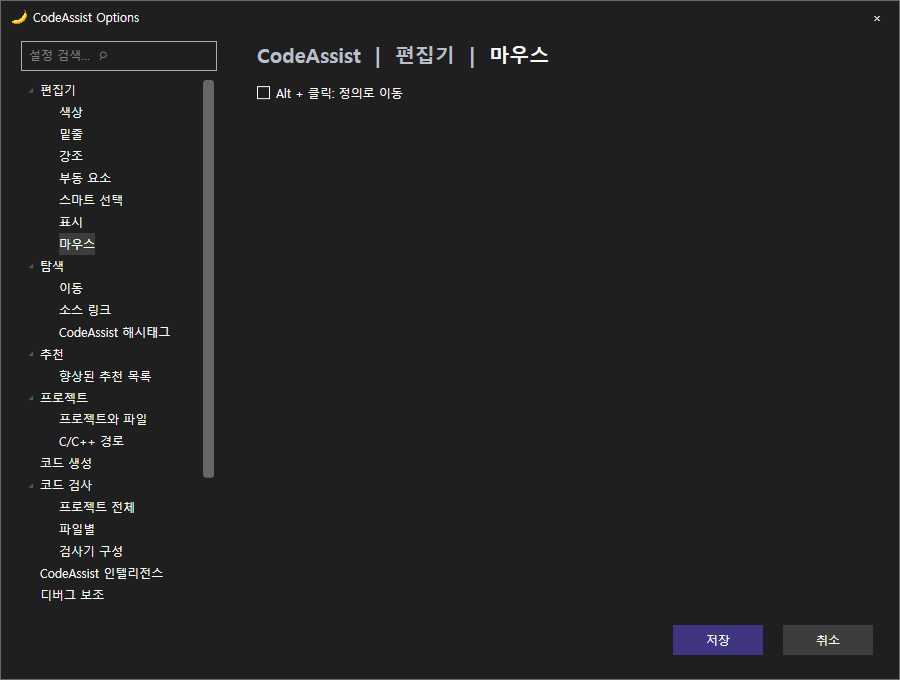
참고 화면](../assets/imports/docs/validation/debug-0.0.91/CA-feature-104-dialog.png)
전체 배치 after
[참고 화면](../assets/imports/docs/validation/debug-0.0.91/CA-feature-104-after.png)
feature-105
전체 배치 before
[참고 화면](../assets/imports/docs/validation/debug-0.0.91/CA-feature-105-before.png)
전체 배치 dialog
[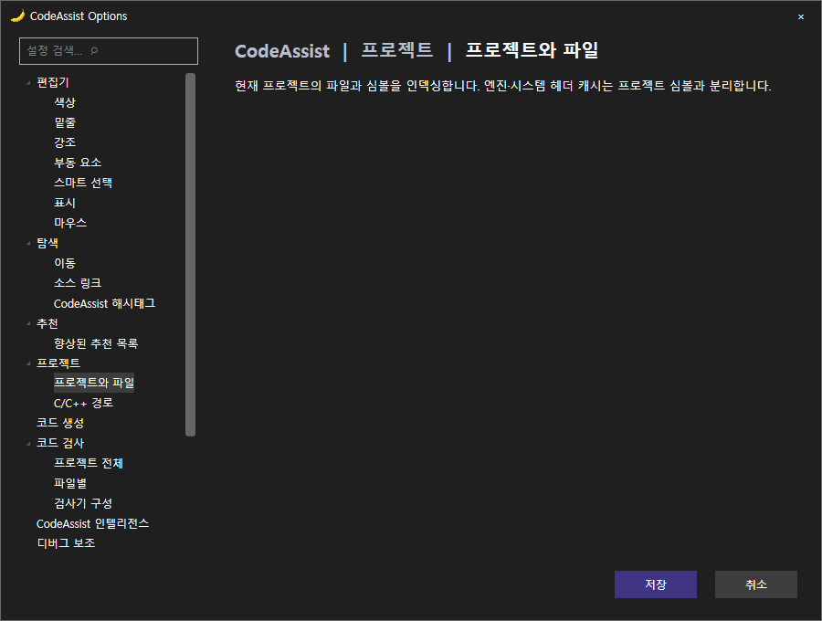
참고 화면](../assets/imports/docs/validation/debug-0.0.91/CA-feature-105-dialog.png)
전체 배치 after
[참고 화면](../assets/imports/docs/validation/debug-0.0.91/CA-feature-105-after.png)
feature-106
전체 배치 before
[참고 화면](../assets/imports/docs/validation/debug-0.0.91/CA-feature-106-before.png)
전체 배치 dialog
[참고 화면](../assets/imports/docs/validation/debug-0.0.91/CA-feature-106-dialog.png)
전체 배치 after
[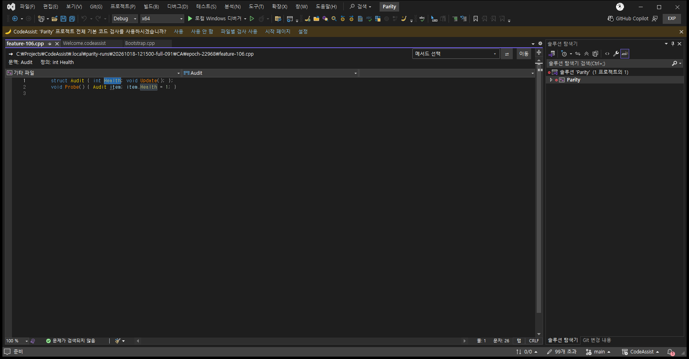
참고 화면](../assets/imports/docs/validation/debug-0.0.91/CA-feature-106-after.png)
feature-107
전체 배치 before
[참고 화면](../assets/imports/docs/validation/debug-0.0.91/CA-feature-107-before.png)
전체 배치 dialog
[참고 화면](../assets/imports/docs/validation/debug-0.0.91/CA-feature-107-dialog.png)
전체 배치 after
[참고 화면](../assets/imports/docs/validation/debug-0.0.91/CA-feature-107-after.png)
feature-108
전체 배치 before
[참고 화면](../assets/imports/docs/validation/debug-0.0.91/CA-feature-108-before.png)
전체 배치 dialog
[참고 화면](../assets/imports/docs/validation/debug-0.0.91/CA-feature-108-dialog.png)
전체 배치 after
[참고 화면](../assets/imports/docs/validation/debug-0.0.91/CA-feature-108-after.png)
pair-delete
전체 배치 before
[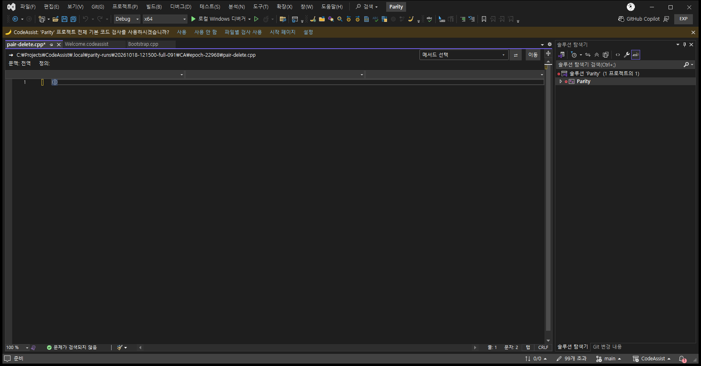
참고 화면](../assets/imports/docs/validation/debug-0.0.91/CA-pair-delete-before.png)
전체 배치 after
[참고 화면](../assets/imports/docs/validation/debug-0.0.91/CA-pair-delete-after.png)
scope-previous
전체 배치 before
[참고 화면](../assets/imports/docs/validation/debug-0.0.91/CA-scope-previous-before.png)
전체 배치 after
[참고 화면](../assets/imports/docs/validation/debug-0.0.91/CA-scope-previous-after.png)
insert-bracket
전체 배치 before
[참고 화면](../assets/imports/docs/validation/debug-0.0.91/CA-insert-bracket-before.png)
전체 배치 after
[참고 화면](../assets/imports/docs/validation/debug-0.0.91/CA-insert-bracket-after.png)
surround-bracket
전체 배치 before
[참고 화면](../assets/imports/docs/validation/debug-0.0.91/CA-surround-bracket-before.png)
전체 배치 after
[참고 화면](../assets/imports/docs/validation/debug-0.0.91/CA-surround-bracket-after.png)
insert-brace
전체 배치 before
[참고 화면](../assets/imports/docs/validation/debug-0.0.91/CA-insert-brace-before.png)
전체 배치 after
[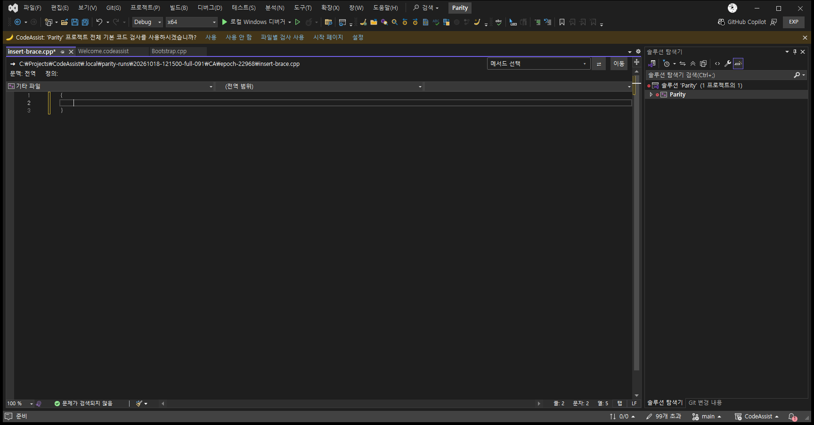
참고 화면](../assets/imports/docs/validation/debug-0.0.91/CA-insert-brace-after.png)
surround-brace
전체 배치 before
[참고 화면](../assets/imports/docs/validation/debug-0.0.91/CA-surround-brace-before.png)
전체 배치 after
[참고 화면](../assets/imports/docs/validation/debug-0.0.91/CA-surround-brace-after.png)
insert-quote
전체 배치 before
[참고 화면](../assets/imports/docs/validation/debug-0.0.91/CA-insert-quote-before.png)
전체 배치 after
[참고 화면](../assets/imports/docs/validation/debug-0.0.91/CA-insert-quote-after.png)
surround-quote
전체 배치 before
[참고 화면](../assets/imports/docs/validation/debug-0.0.91/CA-surround-quote-before.png)
전체 배치 after
[참고 화면](../assets/imports/docs/validation/debug-0.0.91/CA-surround-quote-after.png)
insert-apostrophe
전체 배치 before
[참고 화면](../assets/imports/docs/validation/debug-0.0.91/CA-insert-apostrophe-before.png)
전체 배치 after
[참고 화면](../assets/imports/docs/validation/debug-0.0.91/CA-insert-apostrophe-after.png)
surround-apostrophe
전체 배치 before
[참고 화면](../assets/imports/docs/validation/debug-0.0.91/CA-surround-apostrophe-before.png)
전체 배치 after
[참고 화면](../assets/imports/docs/validation/debug-0.0.91/CA-surround-apostrophe-after.png)
comment-indented
전체 배치 before
[참고 화면](../assets/imports/docs/validation/debug-0.0.91/CA-comment-indented-before.png)
전체 배치 after
[참고 화면](../assets/imports/docs/validation/debug-0.0.91/CA-comment-indented-after.png)
comment-multiline
전체 배치 before
[참고 화면](../assets/imports/docs/validation/debug-0.0.91/CA-comment-multiline-before.png)
전체 배치 after
[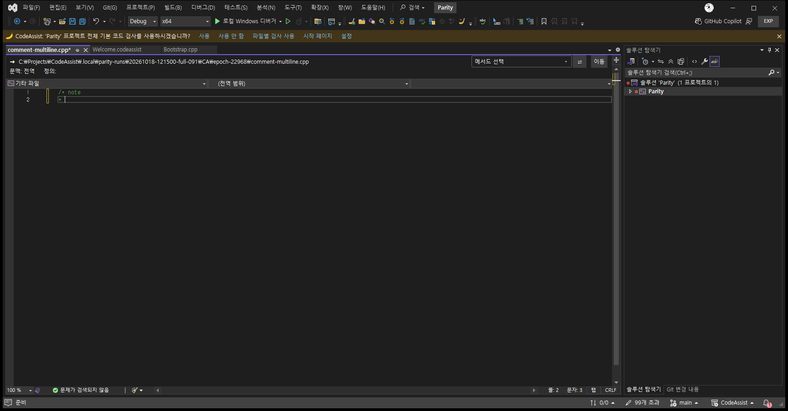
참고 화면](../assets/imports/docs/validation/debug-0.0.91/CA-comment-multiline-after.png)
comment-star
전체 배치 before
[참고 화면](../assets/imports/docs/validation/debug-0.0.91/CA-comment-star-before.png)
전체 배치 after
[참고 화면](../assets/imports/docs/validation/debug-0.0.91/CA-comment-star-after.png)
controlled-comment-continuation
전체 배치 before
[참고 화면](../assets/imports/docs/validation/debug-0.0.91/CA-controlled-comment-continuation-before.png)
전체 배치 after
[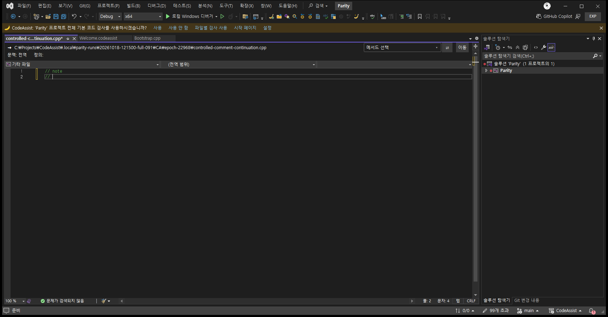
참고 화면](../assets/imports/docs/validation/debug-0.0.91/CA-controlled-comment-continuation-after.png)
controlled-dot-to-arrow
전체 배치 before
[참고 화면](../assets/imports/docs/validation/debug-0.0.91/CA-controlled-dot-to-arrow-before.png)
전체 배치 after
[참고 화면](../assets/imports/docs/validation/debug-0.0.91/CA-controlled-dot-to-arrow-after.png)
controlled-repair-case
전체 배치 before
[참고 화면](../assets/imports/docs/validation/debug-0.0.91/CA-controlled-repair-case-before.png)
전체 배치 after
[참고 화면](../assets/imports/docs/validation/debug-0.0.91/CA-controlled-repair-case-after.png)
controlled-smart-select
전체 배치 before
[참고 화면](../assets/imports/docs/validation/debug-0.0.91/CA-controlled-smart-select-before.png)
전체 배치 after
[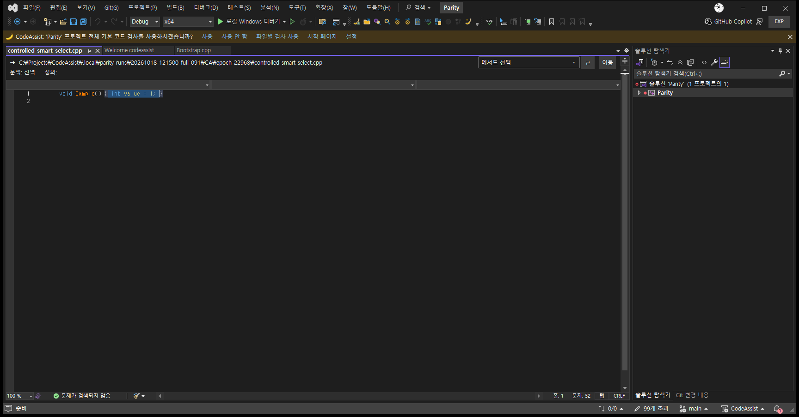
참고 화면](../assets/imports/docs/validation/debug-0.0.91/CA-controlled-smart-select-after.png)
ui-welcome
전체 배치 before
[참고 화면](../assets/imports/docs/validation/debug-0.0.91/CA-ui-welcome-before.png)
전체 배치 dialog
[참고 화면](../assets/imports/docs/validation/debug-0.0.91/CA-ui-welcome-dialog.png)
전체 배치 after
[참고 화면](../assets/imports/docs/validation/debug-0.0.91/CA-ui-welcome-after.png)
검증 기록·설치
결과·빌드별 해시 · 최종 확인 원본 · 전체 배치 원본 · 276개 테스트 · 최신 계열 설치 파일 · VS2019 설치 파일
0.0.91은 실험용 VS에만 적용했습니다. 일반 VS·Unreal 프로젝트는 건드리지 않았습니다. VA는 기존 검증 화면·실행 기록을 참조했습니다. VA 공식 Move Scope 설명 과 전역에서 메서드 간 이동하는 동작도 대조했습니다.
제안 시간10분 · 실제 소요 9분 22초 · 2026-10-18 12:21:05 KST · XERJ 사용, 현재 소스로 확인.
0.0.92 실패 수정·90% 목표 재검증
원문과 편집 이력
보존된 원문 열기
원문 SHA-256: d556ff7bf92fd53d9dd3fdb0ed2cc3388e06e6a5b7e1fc3a58019d94550d843f
표시 날짜는 원본 파일의 수정 시각입니다. 작업 완료 시각은 원문에 있는 값을 기준으로 확인합니다.
 Tracefolio REPORTS & ISSUES
Tracefolio REPORTS & ISSUES](../assets/imports/docs/validation/debug-0.0.91/sort-before.png)
](../assets/imports/docs/validation/debug-0.0.91/CA-feature-053-dialog.png)
](../assets/imports/docs/validation/debug-0.0.91/final-CA-controlled-repair-case-after.png)
](../assets/imports/docs/validation/debug-0.0.91/CA-feature-001-dialog.png)
](../assets/imports/docs/validation/debug-0.0.91/CA-feature-001-after.png)
](../assets/imports/docs/validation/debug-0.0.91/CA-feature-002-before.png)
](../assets/imports/docs/validation/debug-0.0.91/CA-feature-002-dialog.png)
](../assets/imports/docs/validation/debug-0.0.91/CA-feature-002-after.png)
](../assets/imports/docs/validation/debug-0.0.91/CA-feature-003-before.png)
](../assets/imports/docs/validation/debug-0.0.91/CA-feature-004-dialog.png)
](../assets/imports/docs/validation/debug-0.0.91/CA-feature-005-before.png)
](../assets/imports/docs/validation/debug-0.0.91/CA-feature-005-dialog.png)
](../assets/imports/docs/validation/debug-0.0.91/CA-feature-006-before.png)
](../assets/imports/docs/validation/debug-0.0.91/CA-feature-006-dialog.png)
](../assets/imports/docs/validation/debug-0.0.91/CA-feature-007-before.png)
](../assets/imports/docs/validation/debug-0.0.91/CA-feature-007-dialog.png)
](../assets/imports/docs/validation/debug-0.0.91/CA-feature-008-before.png)
](../assets/imports/docs/validation/debug-0.0.91/CA-feature-008-dialog.png)
](../assets/imports/docs/validation/debug-0.0.91/CA-feature-008-after.png)
](../assets/imports/docs/validation/debug-0.0.91/CA-scope-next-after.png)
](../assets/imports/docs/validation/debug-0.0.91/CA-feature-010-dialog.png)
](../assets/imports/docs/validation/debug-0.0.91/CA-feature-011-before.png)
](../assets/imports/docs/validation/debug-0.0.91/CA-feature-012-dialog.png)
](../assets/imports/docs/validation/debug-0.0.91/CA-feature-012-after.png)
](../assets/imports/docs/validation/debug-0.0.91/CA-feature-013-before.png)
](../assets/imports/docs/validation/debug-0.0.91/CA-feature-013-dialog.png)
](../assets/imports/docs/validation/debug-0.0.91/CA-feature-014-dialog.png)
](../assets/imports/docs/validation/debug-0.0.91/CA-feature-015-dialog.png)
](../assets/imports/docs/validation/debug-0.0.91/CA-feature-016-before.png)
](../assets/imports/docs/validation/debug-0.0.91/CA-feature-016-dialog.png)
](../assets/imports/docs/validation/debug-0.0.91/CA-feature-017-before.png)
](../assets/imports/docs/validation/debug-0.0.91/CA-feature-017-after.png)
](../assets/imports/docs/validation/debug-0.0.91/CA-feature-018-dialog.png)
](../assets/imports/docs/validation/debug-0.0.91/CA-feature-019-before.png)
](../assets/imports/docs/validation/debug-0.0.91/CA-feature-019-dialog.png)
](../assets/imports/docs/validation/debug-0.0.91/CA-feature-019-after.png)
](../assets/imports/docs/validation/debug-0.0.91/CA-feature-020-before.png)
](../assets/imports/docs/validation/debug-0.0.91/CA-feature-020-after.png)
](../assets/imports/docs/validation/debug-0.0.91/CA-feature-021-before.png)
](../assets/imports/docs/validation/debug-0.0.91/CA-feature-021-after.png)
](../assets/imports/docs/validation/debug-0.0.91/CA-feature-023-before.png)
](../assets/imports/docs/validation/debug-0.0.91/CA-feature-024-before.png)
](../assets/imports/docs/validation/debug-0.0.91/CA-feature-024-after.png)
](../assets/imports/docs/validation/debug-0.0.91/CA-feature-025-dialog.png)
](../assets/imports/docs/validation/debug-0.0.91/CA-feature-027-dialog.png)
](../assets/imports/docs/validation/debug-0.0.91/CA-feature-028-dialog.png)
](../assets/imports/docs/validation/debug-0.0.91/CA-feature-028-after.png)
](../assets/imports/docs/validation/debug-0.0.91/CA-feature-029-before.png)
](../assets/imports/docs/validation/debug-0.0.91/CA-feature-029-dialog.png)
](../assets/imports/docs/validation/debug-0.0.91/CA-feature-030-before.png)
](../assets/imports/docs/validation/debug-0.0.91/CA-feature-030-dialog.png)
](../assets/imports/docs/validation/debug-0.0.91/CA-feature-031-dialog.png)
](../assets/imports/docs/validation/debug-0.0.91/CA-feature-032-before.png)
](../assets/imports/docs/validation/debug-0.0.91/CA-feature-033-dialog.png)
](../assets/imports/docs/validation/debug-0.0.91/CA-feature-033-after.png)
](../assets/imports/docs/validation/debug-0.0.91/CA-feature-034-dialog.png)
](../assets/imports/docs/validation/debug-0.0.91/CA-feature-034-after.png)
](../assets/imports/docs/validation/debug-0.0.91/CA-feature-035-dialog.png)
](../assets/imports/docs/validation/debug-0.0.91/CA-feature-036-before.png)
](../assets/imports/docs/validation/debug-0.0.91/CA-feature-037-before.png)
](../assets/imports/docs/validation/debug-0.0.91/CA-feature-037-after.png)
](../assets/imports/docs/validation/debug-0.0.91/CA-feature-038-after.png)
](../assets/imports/docs/validation/debug-0.0.91/CA-feature-039-before.png)
](../assets/imports/docs/validation/debug-0.0.91/CA-feature-039-dialog.png)
](../assets/imports/docs/validation/debug-0.0.91/CA-feature-039-after.png)
](../assets/imports/docs/validation/debug-0.0.91/CA-feature-041-before.png)
](../assets/imports/docs/validation/debug-0.0.91/CA-feature-041-dialog.png)
](../assets/imports/docs/validation/debug-0.0.91/CA-feature-041-after.png)
](../assets/imports/docs/validation/debug-0.0.91/CA-acronym-before.png)
](../assets/imports/docs/validation/debug-0.0.91/CA-acronym-after.png)
](../assets/imports/docs/validation/debug-0.0.91/CA-comment-continuation-before.png)
](../assets/imports/docs/validation/debug-0.0.91/CA-comment-continuation-after.png)
](../assets/imports/docs/validation/debug-0.0.91/CA-completion-before.png)
](../assets/imports/docs/validation/debug-0.0.91/CA-completion-after.png)
](../assets/imports/docs/validation/debug-0.0.91/CA-feature-045-before.png)
](../assets/imports/docs/validation/debug-0.0.91/CA-feature-045-dialog.png)
](../assets/imports/docs/validation/debug-0.0.91/CA-feature-045-after.png)
](../assets/imports/docs/validation/debug-0.0.91/CA-pair-insert-before.png)
](../assets/imports/docs/validation/debug-0.0.91/CA-pair-insert-after.png)
](../assets/imports/docs/validation/debug-0.0.91/CA-feature-047-before.png)
](../assets/imports/docs/validation/debug-0.0.91/CA-feature-047-dialog.png)
](../assets/imports/docs/validation/debug-0.0.91/CA-reset-zoom-after.png)
](../assets/imports/docs/validation/debug-0.0.91/CA-feature-052-dialog.png)
](../assets/imports/docs/validation/debug-0.0.91/CA-feature-052-after.png)
](../assets/imports/docs/validation/debug-0.0.91/CA-feature-053-before.png)
](../assets/imports/docs/validation/debug-0.0.91/CA-feature-053-after.png)
](../assets/imports/docs/validation/debug-0.0.91/CA-feature-054-dialog.png)
](../assets/imports/docs/validation/debug-0.0.91/CA-surround-word-after.png)
](../assets/imports/docs/validation/debug-0.0.91/CA-feature-056-dialog.png)
](../assets/imports/docs/validation/debug-0.0.91/CA-feature-056-after.png)
](../assets/imports/docs/validation/debug-0.0.91/CA-feature-057-dialog.png)
](../assets/imports/docs/validation/debug-0.0.91/CA-feature-057-after.png)
](../assets/imports/docs/validation/debug-0.0.91/CA-feature-058-before.png)
](../assets/imports/docs/validation/debug-0.0.91/CA-feature-058-dialog.png)
](../assets/imports/docs/validation/debug-0.0.91/CA-feature-059-dialog.png)
](../assets/imports/docs/validation/debug-0.0.91/CA-feature-059-after.png)
](../assets/imports/docs/validation/debug-0.0.91/CA-feature-060-before.png)
](../assets/imports/docs/validation/debug-0.0.91/CA-feature-060-dialog.png)
](../assets/imports/docs/validation/debug-0.0.91/CA-feature-060-after.png)
](../assets/imports/docs/validation/debug-0.0.91/CA-feature-061-dialog.png)
](../assets/imports/docs/validation/debug-0.0.91/CA-feature-062-before.png)
](../assets/imports/docs/validation/debug-0.0.91/CA-feature-062-dialog.png)
](../assets/imports/docs/validation/debug-0.0.91/CA-feature-062-after.png)
](../assets/imports/docs/validation/debug-0.0.91/CA-feature-063-dialog.png)
](../assets/imports/docs/validation/debug-0.0.91/CA-feature-063-after.png)
](../assets/imports/docs/validation/debug-0.0.91/CA-feature-064-before.png)
](../assets/imports/docs/validation/debug-0.0.91/CA-feature-064-dialog.png)
](../assets/imports/docs/validation/debug-0.0.91/CA-feature-064-after.png)
](../assets/imports/docs/validation/debug-0.0.91/CA-feature-065-before.png)
](../assets/imports/docs/validation/debug-0.0.91/CA-feature-065-dialog.png)
](../assets/imports/docs/validation/debug-0.0.91/CA-feature-066-before.png)
](../assets/imports/docs/validation/debug-0.0.91/CA-feature-066-dialog.png)
](../assets/imports/docs/validation/debug-0.0.91/CA-feature-067-dialog.png)
](../assets/imports/docs/validation/debug-0.0.91/CA-feature-068-before.png)
](../assets/imports/docs/validation/debug-0.0.91/CA-feature-068-dialog.png)
](../assets/imports/docs/validation/debug-0.0.91/CA-feature-070-before.png)
](../assets/imports/docs/validation/debug-0.0.91/CA-feature-070-dialog.png)
](../assets/imports/docs/validation/debug-0.0.91/CA-feature-071-after.png)
](../assets/imports/docs/validation/debug-0.0.91/CA-feature-072-dialog.png)
](../assets/imports/docs/validation/debug-0.0.91/CA-feature-072-after.png)
](../assets/imports/docs/validation/debug-0.0.91/CA-feature-074-dialog.png)
](../assets/imports/docs/validation/debug-0.0.91/CA-feature-074-after.png)
](../assets/imports/docs/validation/debug-0.0.91/CA-feature-075-dialog.png)
](../assets/imports/docs/validation/debug-0.0.91/CA-feature-075-after.png)
](../assets/imports/docs/validation/debug-0.0.91/CA-feature-076-dialog.png)
](../assets/imports/docs/validation/debug-0.0.91/CA-feature-076-after.png)
](../assets/imports/docs/validation/debug-0.0.91/CA-feature-077-before.png)
](../assets/imports/docs/validation/debug-0.0.91/CA-feature-078-dialog.png)
](../assets/imports/docs/validation/debug-0.0.91/CA-feature-079-dialog.png)
](../assets/imports/docs/validation/debug-0.0.91/CA-feature-079-after.png)
](../assets/imports/docs/validation/debug-0.0.91/CA-feature-080-before.png)
](../assets/imports/docs/validation/debug-0.0.91/CA-feature-080-dialog.png)
](../assets/imports/docs/validation/debug-0.0.91/CA-feature-080-after.png)
](../assets/imports/docs/validation/debug-0.0.91/CA-feature-081-dialog.png)
](../assets/imports/docs/validation/debug-0.0.91/CA-feature-081-after.png)
](../assets/imports/docs/validation/debug-0.0.91/CA-feature-082-before.png)
](../assets/imports/docs/validation/debug-0.0.91/CA-feature-082-dialog.png)
](../assets/imports/docs/validation/debug-0.0.91/CA-feature-083-before.png)
](../assets/imports/docs/validation/debug-0.0.91/CA-feature-083-after.png)
](../assets/imports/docs/validation/debug-0.0.91/CA-feature-084-dialog.png)
](../assets/imports/docs/validation/debug-0.0.91/CA-feature-084-after.png)
](../assets/imports/docs/validation/debug-0.0.91/CA-feature-085-dialog.png)
](../assets/imports/docs/validation/debug-0.0.91/CA-feature-086-dialog.png)
](../assets/imports/docs/validation/debug-0.0.91/CA-feature-087-before.png)
](../assets/imports/docs/validation/debug-0.0.91/CA-feature-087-dialog.png)
](../assets/imports/docs/validation/debug-0.0.91/CA-feature-087-after.png)
](../assets/imports/docs/validation/debug-0.0.91/CA-feature-088-dialog.png)
](../assets/imports/docs/validation/debug-0.0.91/CA-feature-089-before.png)
](../assets/imports/docs/validation/debug-0.0.91/CA-feature-089-dialog.png)
](../assets/imports/docs/validation/debug-0.0.91/CA-feature-089-after.png)
](../assets/imports/docs/validation/debug-0.0.91/CA-feature-090-before.png)
](../assets/imports/docs/validation/debug-0.0.91/CA-feature-090-dialog.png)
](../assets/imports/docs/validation/debug-0.0.91/CA-feature-091-before.png)
](../assets/imports/docs/validation/debug-0.0.91/CA-feature-091-dialog.png)
](../assets/imports/docs/validation/debug-0.0.91/CA-feature-091-after.png)
](../assets/imports/docs/validation/debug-0.0.91/CA-feature-092-dialog.png)
](../assets/imports/docs/validation/debug-0.0.91/CA-feature-093-before.png)
](../assets/imports/docs/validation/debug-0.0.91/CA-feature-093-dialog.png)
](../assets/imports/docs/validation/debug-0.0.91/CA-feature-094-dialog.png)
](../assets/imports/docs/validation/debug-0.0.91/CA-feature-094-after.png)
](../assets/imports/docs/validation/debug-0.0.91/CA-feature-095-before.png)
](../assets/imports/docs/validation/debug-0.0.91/CA-feature-095-dialog.png)
](../assets/imports/docs/validation/debug-0.0.91/CA-feature-095-after.png)
](../assets/imports/docs/validation/debug-0.0.91/CA-feature-096-dialog.png)
](../assets/imports/docs/validation/debug-0.0.91/CA-feature-097-before.png)
](../assets/imports/docs/validation/debug-0.0.91/CA-feature-097-dialog.png)
](../assets/imports/docs/validation/debug-0.0.91/CA-feature-098-before.png)
](../assets/imports/docs/validation/debug-0.0.91/CA-feature-099-dialog.png)
](../assets/imports/docs/validation/debug-0.0.91/CA-feature-100-dialog.png)
](../assets/imports/docs/validation/debug-0.0.91/CA-feature-100-after.png)
](../assets/imports/docs/validation/debug-0.0.91/CA-feature-101-dialog.png)
](../assets/imports/docs/validation/debug-0.0.91/CA-feature-102-dialog.png)
](../assets/imports/docs/validation/debug-0.0.91/CA-feature-102-after.png)
](../assets/imports/docs/validation/debug-0.0.91/CA-feature-103-before.png)
](../assets/imports/docs/validation/debug-0.0.91/CA-feature-103-dialog.png)
](../assets/imports/docs/validation/debug-0.0.91/CA-feature-103-after.png)
](../assets/imports/docs/validation/debug-0.0.91/CA-feature-104-before.png)
](../assets/imports/docs/validation/debug-0.0.91/CA-feature-104-after.png)
](../assets/imports/docs/validation/debug-0.0.91/CA-feature-105-after.png)
](../assets/imports/docs/validation/debug-0.0.91/CA-feature-106-before.png)
](../assets/imports/docs/validation/debug-0.0.91/CA-feature-106-dialog.png)
](../assets/imports/docs/validation/debug-0.0.91/CA-feature-107-dialog.png)
](../assets/imports/docs/validation/debug-0.0.91/CA-feature-107-after.png)
](../assets/imports/docs/validation/debug-0.0.91/CA-feature-108-dialog.png)
](../assets/imports/docs/validation/debug-0.0.91/CA-scope-previous-after.png)
](../assets/imports/docs/validation/debug-0.0.91/CA-insert-bracket-before.png)
](../assets/imports/docs/validation/debug-0.0.91/CA-surround-brace-before.png)
](../assets/imports/docs/validation/debug-0.0.91/CA-surround-quote-before.png)
](../assets/imports/docs/validation/debug-0.0.91/CA-surround-quote-after.png)
](../assets/imports/docs/validation/debug-0.0.91/CA-insert-apostrophe-before.png)
](../assets/imports/docs/validation/debug-0.0.91/CA-insert-apostrophe-after.png)
](../assets/imports/docs/validation/debug-0.0.91/CA-comment-indented-after.png)
](../assets/imports/docs/validation/debug-0.0.91/CA-comment-star-before.png)
](../assets/imports/docs/validation/debug-0.0.91/CA-comment-star-after.png)
](../assets/imports/docs/validation/debug-0.0.91/CA-controlled-comment-continuation-before.png)
](../assets/imports/docs/validation/debug-0.0.91/CA-controlled-repair-case-before.png)
](../assets/imports/docs/validation/debug-0.0.91/CA-controlled-repair-case-after.png)
](../assets/imports/docs/validation/debug-0.0.91/CA-controlled-smart-select-before.png)
](../assets/imports/docs/validation/debug-0.0.91/CA-ui-welcome-dialog.png)
](../assets/imports/docs/validation/debug-0.0.91/CA-ui-welcome-after.png)